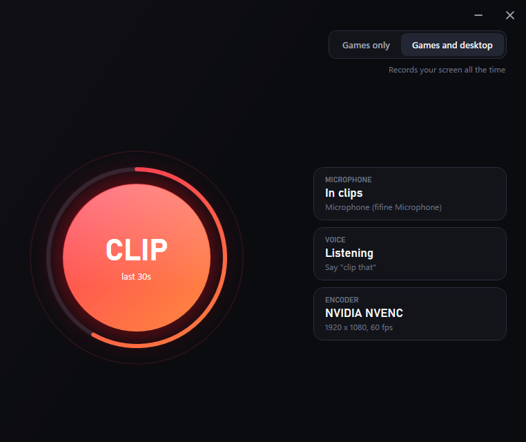
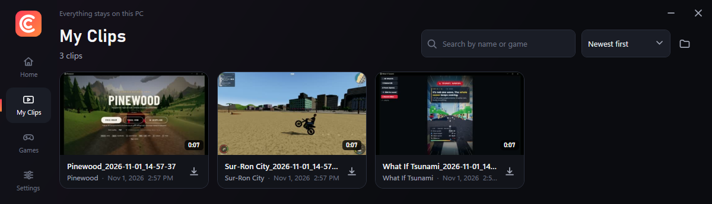
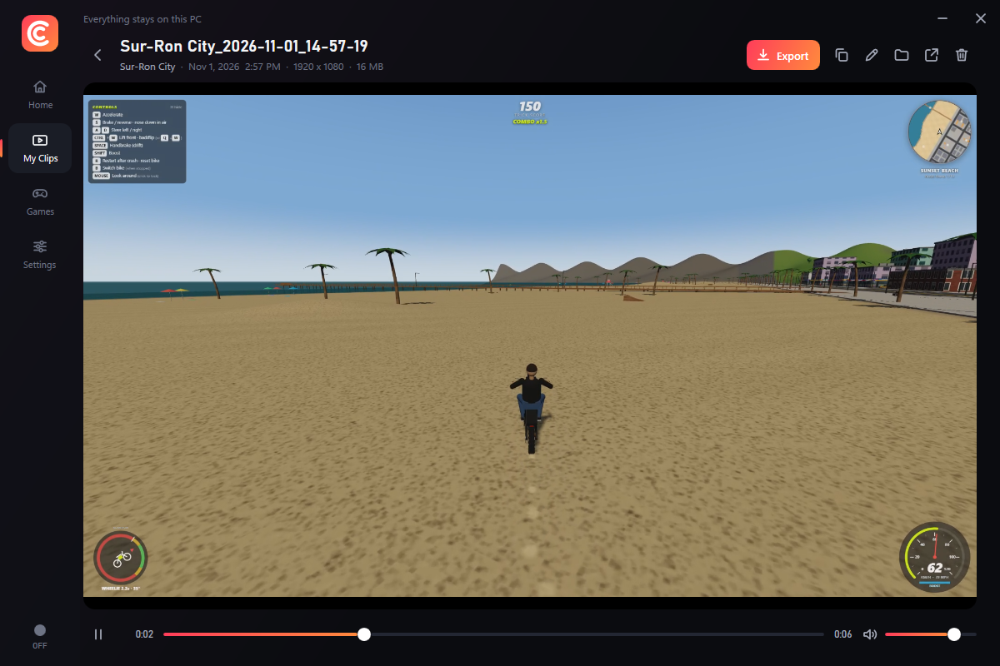

F8 Hit the key
Works while your game has focus. Pick any key combination you like, and ClipClip warns you if another app already owns it.
Instant replay for Windows
ClipClip holds your recent gameplay in memory. When something great happens, press a key or just say "clip that". You get a normal MP4 and recording never stops.

The moment already happened by the time you react. ClipClip is already holding it. Try it here.
Press F8 or the button. This demo runs in your browser and records nothing.
Works while your game has focus. Pick any key combination you like, and ClipClip warns you if another app already owns it.
Hands busy? Speech recognition runs entirely on your PC, listens for your phrase only, and you can change the phrase.
A big Clip button in the app and a Clip Now item in the system tray. A repeat press never makes a duplicate clip.
Every clip lands in a library with thumbnails, the game it came from, the date and its length. Search by name or game, watch it right there, rename it, or copy it straight into Discord.


ClipClip spots games from your Steam, Epic, GOG and Xbox libraries, and recognizes Unity and Unreal games on its own. When the game closes, recording stops.
Missing one? Point ClipClip at the .exe, give it a name, and it is recognized from then on.
Turn on Games and desktop to clip your browser, your apps or anything else on screen. The two modes sit side by side on the home screen, so you always know which one you are in.
The tray icon stays colored while recording. Pause any time.
Mix your microphone into clips with its own volume and mute, separate from game audio. If the mic gets unplugged, clips keep saving and it reconnects when it comes back.
Hardware encoding on your graphics card does the heavy work. ClipClip supports NVIDIA NVENC, AMD AMF and Intel Quick Sync, with a software fallback.
Measured on one PC: 32 thread CPU, RTX 5070, recording 1080p at 60 fps with NVENC. CPU is a share of all cores. The frame rate test is a worst case, with an uncapped renderer holding the GPU at full load. Your numbers will vary.
The installer isn't code signed yet, so SmartScreen doesn't recognize it. Choose More info, then Run anyway.
ClipClip doesn't inject anything into games or read their memory. It records through the capture system built into Windows. That said, each anti-cheat sets its own rules, so nobody can promise how every game will react.
64-bit Windows 11, or Windows 10 version 2004 or newer. It uses about 500 MB of disk, plus whatever your clips take up. ClipClip was developed and tested on Windows 11. A modern graphics card keeps recording light, and it also works without one by encoding on the CPU.
Borderless and regular fullscreen work. Very old games running in true exclusive fullscreen may record black. Switching those games to borderless fixes it.
English for now. You can change the trigger phrase, and there is a sensitivity slider and a microphone test in Settings.
Yes. Choose from 15 seconds up to 3 minutes, or set any length up to 30 minutes. Longer clips use more memory while recording.
Use Installed apps in Windows Settings. Your clips stay where they are.